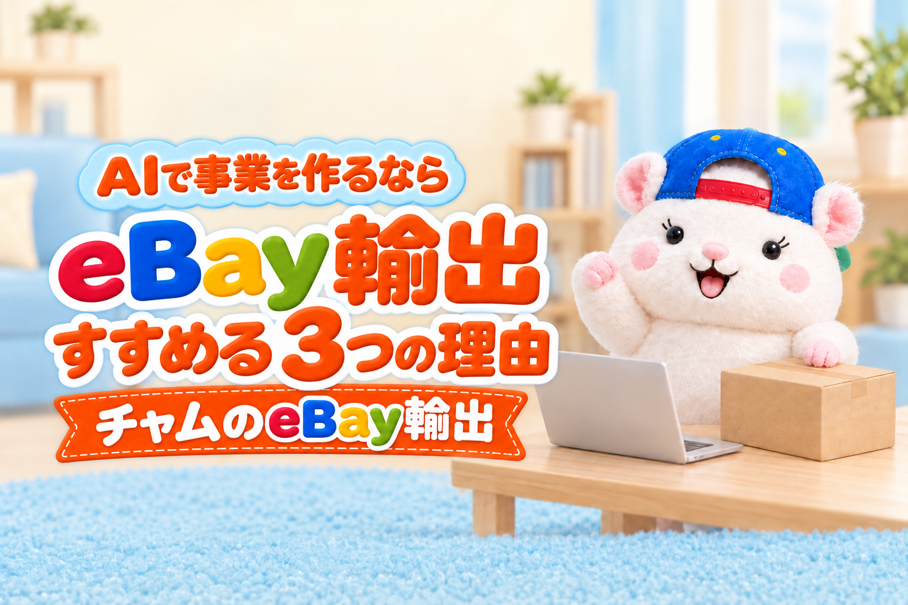

AIに課金しているなら、次は「AIで事業を作る」番です。
Claude Code、ChatGPTのCodex、Gemini。
声のAI、音楽のAI。
「こんなことまでできるんだ」と、AIの進歩に驚いている人は多いと思います。
でも、便利になっただけで終わっていませんか?
課金している以上、AIで稼ぐところまで行きたいところです。
AIで事業を作るなら、ぼくはeBay輸出(海外向けのネット通販で、日本の商品を売る副業)をすすめます。
理由は3つです。
- ノウハウが出回っている
- パソコンでほぼ完結する
- 初心者でも利益が出やすい
1と2は、AIで事業を作るときの「選び方」そのものです。
eBay以外を考えている人も、この2つで当てはめてみてください🐹
AIは「便利」で終わらせない
AIで効率化できるのは、もちろんいいことです。
ただ、それだけでは、課金した分が手元に戻ってきません。
いまは、事業を作るための材料がそろっています。
AIのツールも、知識も、ノウハウも。
足りないのは、「何の事業にAIを使うか」を決めることだけです。
ここを決めずにAIを触っていると、いつまでも「便利」で止まります。
理由1: ノウハウが出回っている
AIで事業を作るなら、ノウハウが出回りまくっている副業を選ぶのがおすすめです。
ノウハウが出回っていれば、それをAIに読み込ませればいい。
手順をAIが知っている状態から始められます。
あなたがゼロから考える部分が、ぐっと減ります。
副業やスモールビジネスで、昔から人気があるものほど、ノウハウは多く出回っています。
人気がある、ということは、それだけ「やってみたら結果が出た人」が多いということでもあります。
例えば、Googleで1か月に探される回数を比べてみました。
「eBay輸出」に関係する言葉の合計は、月2,870回。
ぼくがやっているもう1つの副業、「レンタルスペース」に関係する言葉の合計は、月500回です。
(Googleキーワードプランナー・2025年10月〜2026年9月の月平均)
約6倍の差があります。
「ebay 出品」は、前の年より30%増えています。
ぼくはどちらの発信もしていますが、反応もeBayのほうが、ずっと大きいです。
理由2: パソコンでほぼ完結する
2つ目の条件は、パソコンでほぼ完結する商売であることです。
AIが動けるのは、パソコンの中だけです。
例えば料理の商売は、どうしても人の手がいります。
作る・盛る・運ぶ。
ここはAIに任せられません。
eBay輸出は、ほとんどがパソコンの中の仕事です。
リサーチ、出品、価格の見直し、お客さんへの返信。
人の手がいるのは、梱包と発送くらいです。
だから、AIとの相性は抜群です。
例えば、いまのぼくの店では、人間がやっている仕事は梱包発送だけです。
それも外注しています。
ただ、AIをeBayでどう使うかは、各サービスの規約を確かめたうえで、ご自身の責任で決めてください。
ぼくは、eBay Japanに問い合わせて書面で回答をもらった範囲(公式のAPIを使う・買い手の個人情報をAIに渡さない・AIでブラウザからeBayの画面を開かない)で使っています。
AIに任せない人は、同じ手順を自分の手で進めても、同じように始められます。
理由3: 初心者でも利益が出やすい
eBay輸出は、副業がはじめての人でも、利益が出やすい副業です。
ノウハウどおりに進めれば、1か月目から利益が出る人が多いと思います。
1か月、2か月と続けて、月10万円・20万円に届く人も、めずらしくありません。
もちろん、同じ金額になるとは約束できません。
商品の選び方と、続けた量で変わります。
例えば、ぼくは以前、人の外注さんと一緒にeBayをやっていた時期があります。
そのときは、13か月目に、月の利益が100万円をこえました。
そしていまは、AIに任せた店で、1か月目の利益が10万4,286円でした。
人に任せても、AIに任せても、手順そのものは同じです。
ノウハウが出回っていて、パソコンで完結するから、手順をそのままAIに渡せる。
理由1と2が、そのまま理由3につながっています。
理由1で「ノウハウをAIに読み込ませればいい」と書きました。
ぼくの店のやり方は、AIにそのまま読み込ませられる形で、1冊の教科書にまとめています。
リサーチ・出品・価格の見直し・顧客対応まで、AIに任せる手順を工程ごとに書きました。
あなたのAIに渡せば、その日から同じ手順で進められます。
▼『AI × eBay輸出の教科書 — 梱包以外、ぜんぶAI』

▼eBayが副業に向いている理由は、こちらにもまとめています

まとめ
AIで事業を作るなら、eBay輸出。ノウハウが出回る・パソコンで完結・初心者でも利益の3つ
AIに課金しているなら、次はAIで事業を作る番です。
eBay輸出をすすめる理由は、この3つでした。
- ノウハウが出回っている → AIに読み込ませて、手順ごと任せられる
- パソコンでほぼ完結する → 人の手がいるのは梱包と発送くらい
- 初心者でも利益が出やすい → 1と2があるから、はじめてでも手順どおりに進められる
このあとは、リサーチ・出品など、工程ごとにAIに任せるやり方を書いていきます。
先にぜんぶの手順を知りたい人は、記事の最後の教科書から、AIに読み込ませてみてください。
あなたのAI、いまは「便利」で止まっていませんか?
便利なAIを、稼ぐAIにしよう🐹
▼中の人🏠(レンタルスペース23部屋・売上1.5億)のレンスペ実録

▼ブログ(eBay×レンスペ、全記事まとめ)


▼この店のやり方は、ぜんぶ1冊にまとめてあります
リサーチ・出品・値付け・顧客対応まで、初月利益10万4,286円を出した実店舗の記録と手順を全部書いた教科書です。
読んだその日から、AI社員の作り方をそのまま真似できます。
『AI × eBay輸出の教科書 — 梱包以外、ぜんぶAI』
🎁 2026年10月22日に第3版になりました。顧客対応 完全自動化ツール・ストアドクター・AI自動化コーチなど付録6つは、これまでに買った人も含めて購入者全員に無料で受け取れます。
内容・最新価格は販売ページをご確認ください。